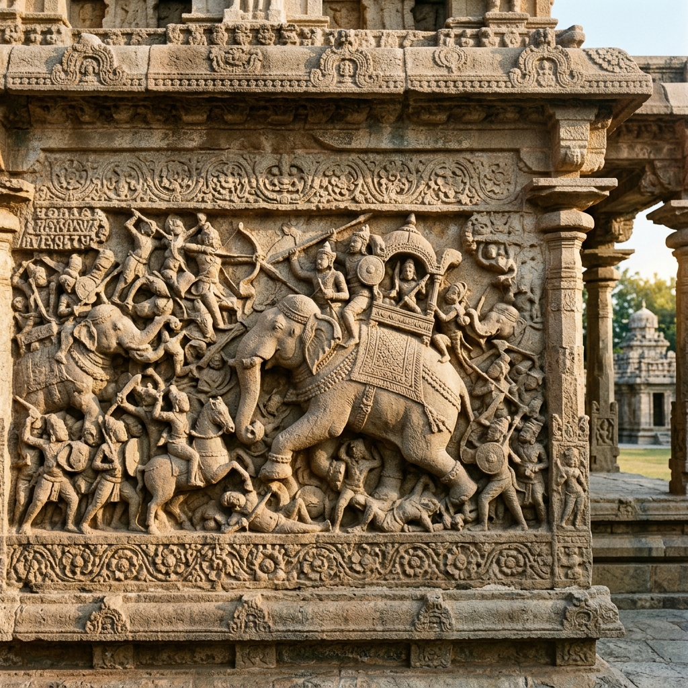

Battle of Takkolam Explorer
Step onto the sun-scorched plains of the northern Tamil country. Uncover the epic Chola–Rashtrakuta clash where crown prince Rajaditya fell from his war elephant and Emperor Krishna III broke the Chola hold on Thondaimandalam — a defeat whose consequences echoed for a generation.
The Rashtrakuta Invasion of the Chola Kingdom
By the mid-10th century, Chola king Parantaka I had carried his dynasty to the summit of its early power — conquering the Pandya and Chera countries and sweeping down the Kaveri. Across the Deccan, however, the Rashtrakuta emperor Krishna III was bent on restoring the imperial glory that had slipped from his predecessors. Sensing his ageing rival's overreach, he launched a devastating invasion of the Chola kingdom.
Parantaka I dispatched his eldest son and crown prince, Rajaditya, at the head of the Chola army. The two great forces collided at Takkolam in Thondaimandalam, near the Pallava heartland of Kanchi — a single, ferocious encounter that would decide the fate of South India for a generation.
🏛️ At a Glance
- Combatants: Chola Dynasty vs. Rashtrakuta Empire.
- Location: Takkolam, Thondaimandalam (Tamil Nadu).
- Outcome: Decisive Rashtrakuta victory.
- Significance: Rajaditya slain; Kanchi & Tanjore fell to Krishna III.
Sovereigns of the Battle
The commanders at Takkolam were titans of the 10th-century Deccan, whose rivalry would redraw the map of South India.
Krishna III
The Rashtrakuta Emperor of Manyakheta, architect of the southern crusade. His generalship at Takkolam re-established Rashtrakuta supremacy across the Deccan and Tamil country.
Rajaditya
The Chola crown prince and commander of the expedition. He fought in the vanguard from atop a war elephant, and fell in the thick of battle — a martyrdom immortalised in contemporary inscriptions.
Butuga II
The Western Ganga feudatory of the Rashtrakutas, whose veteran troops and elephant corps turned the tide. The Atakur inscription credits him with striking down the Chola prince.
Parantaka I
The ageing Chola sovereign who sent his heir to war. The loss of his beloved son and his northern provinces clouded the closing years of his long and glorious reign.
Belligerents & Alliances
Two great imperial systems, each reinforced by loyal feudatories, met in a single decisive field.
The Chola Kingdom
Led by crown prince Rajaditya on behalf of Parantaka I. Supported by the Bana and Vaidumba chieftains of the northern Tamil frontier, fighting to defend Thondaimandalam.
The Rashtrakuta Empire
Led by Krishna III from his capital at Manyakheta. Commanded the might of the Deccan and its formidable war-elephant corps, freshly hardened in campaigns across the plateau.
The Western Gangas
Feudatories of the Rashtrakutas under Butuga II. Their disciplined Ganga levy and elite elephants formed the spearhead that broke the Chola centre.
Bana & Vaidumba Allies
Loyal Chola feudatories of the northern Tamil country who fought alongside Rajaditya, their hill forts and levies anchoring the Chola line at Takkolam.
📈 Outcome & Strategic Impact
- Battle Winner: Krishna III routs the Chola army at Takkolam.
- Martyrdom: Crown prince Rajaditya is slain atop his war elephant.
- Kanchi & Tanjore Fall: The Rashtrakutas seize both great capitals in the following years.
- Chola Eclipse: Thondaimandalam is lost and Chola power recedes for two decades.
The Price of Takkolam
The battle opened with a ferocious exchange of arrows and elephants. Rajaditya, crowned with royal honours and fighting from a towering war elephant, pressed deep into the Rashtrakuta ranks. Wounded early in the day, he refused to leave the field and fought on — until a final volley struck him down. The death of the crown prince threw the Chola army into confusion and sealed a total Rashtrakuta victory.
Krishna III exploited the triumph without mercy. His armies swept through Thondaimandalam, seized Kanchipuram, raised a pillar of victory, and marched south to the Kaveri, briefly occupying Tanjore itself. The heartbroken Parantaka I withdrew to the deep south and died a few years later, leaving the Chola state battered and on the defensive.
Chronology of the Chola–Rashtrakuta Struggle
Follow the events before and after Takkolam that reshaped South Indian history.
Krishna III's Rise
The new Rashtrakuta emperor consolidates the Deccan and begins probing the northern frontiers of the Chola kingdom.
The Battle of Takkolam
The Chola army under Rajaditya is crushed. The crown prince falls in battle, and Thondaimandalam passes into Rashtrakuta hands.
Kanchi and Tanjore Fall
Krishna III captures Kanchipuram, plants a pillar of victory, and pushes south of the Kaveri to occupy Tanjore — the height of Rashtrakuta power.
Death of Parantaka I
The ageing Chola king, broken by the loss of his heir and his kingdom, passes away while the Cholas struggle to recover.
End of Krishna III
The death of the Rashtrakuta emperor loosens his empire's grip, and Chola fortunes begin to revive under Uttama Chola.
The Chola Resurgence
Rajaraja Chola I rebuilds the dynasty into the mightiest empire of South India — a recovery forged in the shadow of Takkolam.
Long-Term Consequences
How one afternoon on a field in Thondaimandalam redefined two imperial dynasties.
The Chola Eclipse
The defeat cost the Cholas Thondaimandalam and both capitals. For nearly two decades the dynasty fought to hold the Kaveri heartland against Rashtrakuta raids.
Rashtrakuta High-Water Mark
Takkolam carried Krishna III to the apogee of Rashtrakuta power, from the Narmada to the Kaveri — a supremacy that lasted until his death in 965 CE.
A Reformed Chola State
The trauma of Takkolam forced the Cholas to reorganise their army, administration, and succession — reforms that made the imperial expansion of Rajaraja I possible.
Relics of the Chola–Rashtrakuta Age
Explore the temples, copper-plate charters, and stone carvings that preserve the memory of this age of titans.

Brihadeeswarar Temple
The Chola legacy that outlived the defeat at Takkolam.

Kanchipuram Reliefs
Stone armies of the city that changed hands at Takkolam.

Udayendiram Plates
Charter records of the battles that shaped the Tamil country.
📚 References & Further Reading
- The Atakur Inscription of Butuga II (c. 949 CE). Ganga-Rashtrakuta record of the campaign and the slaying of Rajaditya.
- Nilakanta Sastri, K. A. (1935). The Colas. University of Madras.
- Nilakanta Sastri, K. A. (1955). A History of South India. Oxford University Press.
- Champakalakshmi, R. (1996). Trade, Ideology and Urbanization: South India 300 BC to AD 1300. Oxford University Press.
- Thapar, Romila (2002). Early India: From the Origins to AD 1300. University of California Press.